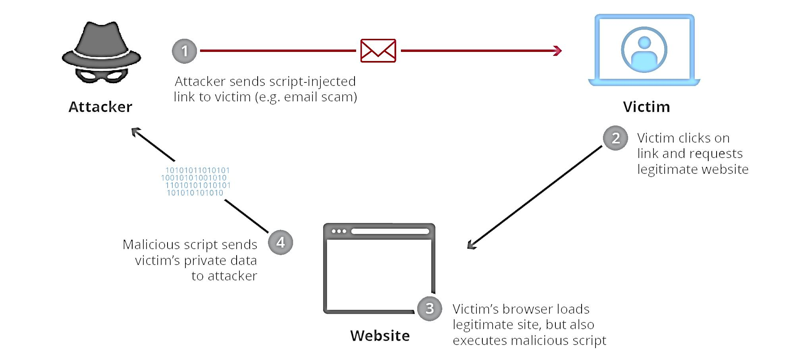

What is cross-site scripting (XSS)?
XSS is a code injection attack that allows an attacker to execute malicious script in another user's browser
How XSS work?
What can XSS be used for?
- stealing cookie and session information
- performing HTTP requests with the user’s session
- redirecting users to hostile websites
- accessing and manipulating client-side persistent storage
- rewriting or manipulating in-browser applications
- ...
What are the types of XSS attacks?
- Reflected XSS
- Stored XSS
- DOM-based XSS
Reflected cross-site scripting
In a reflected XSS attack, the malicious string is part of the victim's request to the website. The website then includes this malicious string in the response sent back to the user.
http://example.com/search.php?q=Stored cross-site scripting
Stored XSS arises when an application receives data from an untrusted source and includes that data within its later HTTP responses in an unsafe way.
Hello, this is my message!
DOM-based cross-site scripting
DOM XSS arises when an application contains some client-side JavaScript that processes data from an untrusted source in an unsafe way, usually by writing the data back to the DOM.
DOM-based XSS is a variant of both persistent and reflected XSS.
var search = document.getElementById('search').value;var results = document.getElementById('results');results.innerHTML = 'You searched for: ' + search;
You searched for: 
What is the difference between traditional XSS and DOM XSS?
How to prevent XSS attacks?
- Escaping user input
- Sanitizing user input
- Validating inputs
- Sanitizing data
- Avoiding HTML in inputs
- Content Security Policy
- Setting web application firewalls (WAF) rules
- ...